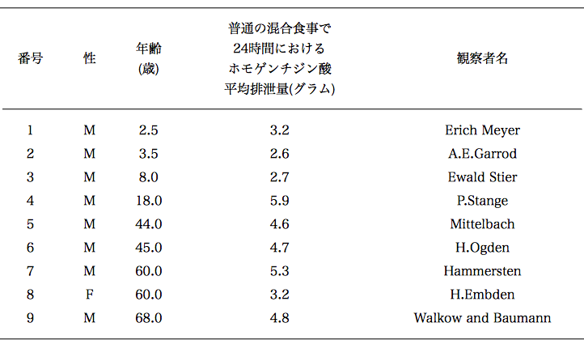
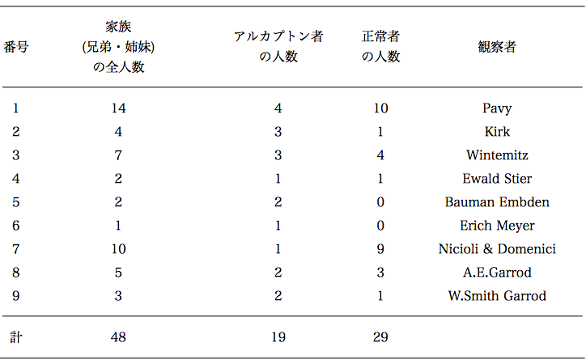
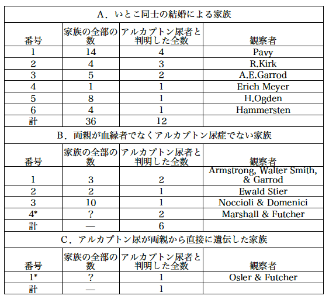

アーチボルド・ギャロッド ＭＡオクスフォード大学ＭＤ
グレート・オーモンド街小児病院医師、聖バーソロミュー病院化学病理学・実地授業助手
ランセット誌 pp.1616-1620（1902）より
アルカプトン尿症についての最近の研究は、この病態で不変な特性はホモゲンチジン酸（＊２，５−ジヒドロキシフェニル酢酸）の排泄であり、アルカプトン（＊アルカリ＋掴まえる）尿の特別な性質、すなわちアルカリが存在し空気があると暗黒色になり、布を深く染め、金属塩を還元する能力を持つことは、等しくこの物質の存在によることが示されるようになっている。Wolkow and Baumann［１］が最初にこの酸を単離し記載した後では、充分に研究されたすべての例においてこの物質の存在が示され、以前の症例から得られた物質を再検査するとこれが見出された。これと似た第２のアルカプトン酸であるウロロイシン（＊尿＋白い）はこれまでのところ Kirk が研究した例にだけ大量のホモゲンチジン酸に伴って見つかっている［２］。R. Kirk 博士の好意によって私は最近になり今では成人した彼の患者たちの新鮮な試料を検査する機会を得て、現在ではこの患者たちですらウロロイシン酸を排泄していないことを見て満足した。ホモゲンチジン酸を鉛塩としてできるだけ分離した後で少量のアルカプトン酸の残差を最近 Erich Meyer［３］が記載した方法でエチルエステルにして得た結晶性の産物はエチルホモゲンチジン酸の融点（120℃）に一致した。さらにその後の観察、とくに Mittelbach［４］の観察は、排泄されたホモゲンチジン酸がチロシンから誘導されたものであるという信念を強くした。しかしアルカプトン尿者がチロシンのベンゼン環を分解しないで排泄するのは何故か、チロシンからホモゲンチジン酸への奇妙な化学変化がどこで起きるのかは、解明されていない問題である。
アルカプトン尿症は病気の発現ではなく、むしろ害がなく普通は先天的であって一生続く代謝の別経路の性格を持つものである、と考えることの正しい理由がある。この異常は起きても健康にはっきりとした障害を与えず、成人になりさらに高齢になっても無害であることが証明されている。これらの人たちが普通に排泄しているホモゲンチジン酸は、芳香族性の毒物として解毒されて芳香族硫酸エステルになったり尿中で中和のためにアンモニアの余計な排泄を伴わないことを Erich Meyer の観察が示しているように、芳香族としての毒性を示さないし酸中毒の原因になっていないからである。しかし代謝の別経路とみなすとアルカプトン尿者は普通の経路にくらべると幾らか劣っていると見なすべきであろう。普通の最終産物にくらべるとホモゲンチジン酸の排泄はあるていど潜在エネルギーを無駄にするからである。この点について我々が知る限りで個人は明らかにアルカプトン尿者であるか又は正常者である。言い換えると毎日数グラムを排泄するか全く排泄しないかである。痕跡的に出現したり徐々に増えたり減ったりすることは、稀に報告されている一時的または間欠的な病例でも観察されたことはない。測定すると毎日の排泄量は、タンパク質性の食事がホモゲンチジン酸排泄に大きな影響があることおよび性差や年齢を考慮すると、一定の狭い範囲にあると記載できるであろう。このことは年齢順に並べた第１表によく示されている。

第１表 ホモゲンチジン酸の平均排泄量
アルカプトン尿の発現についての情報は上に述べた本性についての見解からも興味深い。多くの例からしてこれが先天的であることを疑う余地の無いことは特徴である。尿で布が染められる性質は容易に産まれたばかりの幼児において気のつくことである。このことは繰り返して観察され、私の１例［５］でもお襁褓が染まったのは赤ん坊が生まれて57時間後に気がついていた。両親が正常でありこの異常が先祖にも無いときに、兄弟・姉妹に２人またはそれ以上に起きることは、その他の病態との関係で良く知られている。このようにして多分生まれつきと思われる32人の知られている例で少なくとも19人が７家族で起きていた。１家族で４人のアルカプトン尿者が見られ、他の３家族には３人づついて、残りの３家族には２人づつであった。アルカプトン尿者と正常者の割合は興味深いものであり、現在のところ先天性の例としてこの点にかんしてはっきりと得られている知識は、第２表に示されている。

第２表 ９家族におけるアルカプトン尿者と正常者の割合
1901年に王立内科外科協会において現著者は11人の先天的なアルカプトン尿者がいるイギリスの４家族において少なくとも３家族は、このような異常の無いいとこ同士（従兄弟・従姉妹）が結婚して産まれた子供たちであることを報告した。この事実はアルカプトン尿者の原因（病因）と興味深い関係があるので、出来るだけ多くの先天性と思われる記録例を集めるのが好ましいと思われた。このような例を報告した何人かの研究者たちに問い合わせたところ非常に親切な対応を頂き、得られた例数はまだ限られてはいたがこれまで知られていなかった有用な事実が明らかになり、将来において観察されるであろう例において質問するのに役立つような徴候が得られた。幾つかの例において患者たちが見つからなくなったり、何らかの原因で彼らについての情報がもはや得られなくなっていたこともあった。これらの例について私を助けてくださったがときには努力が無駄になった人たちにたいしても、新しい情報を与えることができた人たちにたいするのと同じように心から感謝する［６］。
以下は集められた新しい情報の短い要約である。論文で患者の両親に血縁があると書いた Dr. Erich Meyer［７］は実際のところ従兄弟・従姉妹であると知らせてくれた。Dr. H. Ogden［８］によると患者は８人の兄弟・姉妹の７番目であり両親はいとこ同士であったと述べている。年上の３人の子供たちは幼少のときに死亡した。５番目は女性で３人の子供たちを産んだが誰もアルカプトン尿者ではない。兄弟・姉妹の中に他の記録例は無い。患者は血縁関係の無い女性と結婚して３人の子供を持ったが誰もアルカプトン尿者ではない。Hammarsten 教授［９］は最近に記載したアルカプトン尿者の両親はいとこ同士であると述べている。患者は61歳であり３人の兄弟が居るが尿を検査した兄弟はアルカプトン尿者ではなかった。Noccioli 教授［10］が Dr. Domenici とともに研究した女性の両親には血縁が無かった。患者は双生児であり10人の兄弟・姉妹で生存している２人のうちの１人であり彼女の親族に誰もアルカプトン尿者は居ないとのことであった。Dr. Ewald Stier［11］によると彼の患者の両親に血縁は無く、アルカプトン尿者ではないと論文に記載されている。Ebstein 教授［12］は1875年に Dr. M
 ller と共に研究した「ピロカテキン尿」の子供の両親は血縁が無いと述べているが、尿中の異常物質はカテコール（ピロカテキン）と同定されているので教授はこれを普通のアルカプトン尿ではないとみなしていると私は考えている。Osler 教授は Dr. Futcher［13］が以前に記載したアルカプトン尿者の２人の息子のうちで１人はアルカプトン尿者であるという興味深い情報を提供した。父親には Marshall［14］が記載したアルカプトン尿者の兄弟が居たが、両親に血縁はなかった。上記の代謝異常は以前に記録されたイギリスの例とともに第３表に要約している。
ller と共に研究した「ピロカテキン尿」の子供の両親は血縁が無いと述べているが、尿中の異常物質はカテコール（ピロカテキン）と同定されているので教授はこれを普通のアルカプトン尿ではないとみなしていると私は考えている。Osler 教授は Dr. Futcher［13］が以前に記載したアルカプトン尿者の２人の息子のうちで１人はアルカプトン尿者であるという興味深い情報を提供した。父親には Marshall［14］が記載したアルカプトン尿者の兄弟が居たが、両親に血縁はなかった。上記の代謝異常は以前に記録されたイギリスの例とともに第３表に要約している。
第３表 アルカプトン尿者の大きな部分である子どもたち
＊Ｂ４とＣ１は１つの家族（兄弟）の２世代に関係している。前の世代にアルカプトン尿者が居なかったかどうかの情報は無い。Ebsteinと M
ller の例は上に述べた理由で表に加えなかったが加えるとＢの家族数は５になる。ヨーロッパ大陸およびアメリカにさらに問い合わせると、アルカプトン尿の個人の非常に大きな割合はいとこ同士の結婚による子供であるというイギリスの例から得られた感じが確証された。上の表は報告された全体で40の例からの19例を含んでいて新しい例が観察されるまでこれ以上の情報を得る機会はほとんど存在しない。異常の無い両親からの家族のうちで約60%はいとこ同士の結婚による子であることに気がつくであろう。この割合が如何に高いかを評価するには、社会全体におけるこのような結婚による子供たちの割合について考える必要がある。G. Darwin 教授［15］は精巧な統計研究を行ってイギリスにおいて貴族および紳士階級で約４%がいとこ同士の結婚であり、田舎および小さな町では２または３％であるが、ロンドンでは低くて1.5%ぐらいであろうとしている。全人口では上限が多分３％であろうと示唆している。たぶん実際は事実ではないだろうが、この結婚が全体例と同じようにうまくゆくとすると家族について同じ事を言えるし、さらにこの結婚によって平均的な子供の数が得られるとしたら個人についても同じことが言えるだろう。ロンドンの病院患者についての私の限られた数の観察によると、上の数と全く対応した結果が得られた。すなわち、聖バーソロミュー病院である時の入院患者50人のうちで１人の両親がいとこ同士であった。他のばあいに100人の患者で１人がそうであったし、病む子供・病院の私の病棟の100人の患者のうちでいとこ同士の結婚の子が１人いた。一方ではいとこ結婚の子にアルカプトンの家族または個人の割合が多いのは事実であるが、このような結婚による子供たちがアルカプトン尿者である割合の非常に低いことは明らかである。このような子供が地域共同体で僅か３％としてもロンドン全体では５万人になるが、そのうちでアルカプトン尿者であるのは数人しか知られていない。疑い無く他にも居るであろうがこの異常の稀なことは疑問の余地が無い。２つの大きな病院で注意深く調べた結果として私は信念を持つようになった。そして近年この主題は以前よりも注目されているが記録例は増えているとしても遅い。
血族結婚によって子供に異常が起きたり病気が起きる可能性について盛んに論じられている。しかし厳しい科学的な精神でなされていることは稀である。この問題について書く人たちはこのような結合の有害な結果についてまたは無害なことについて示すのを目的としている。ここではこのような問題を取り扱わない。両親に血縁関係があるということだけで子供たちにアルカプトン尿症のような病態が起きると考える理由は無く、むしろ我々は両親にある何かの特殊性についての説明を求めるべきである。この特殊性は何代ものあいだ隠れているがこの家系の２人に運び込まれて、しかるべき機会において彼らの子供たちに出現する。少なくとも最近の世代までは出現していなかったのに家系の何人かの傍系メンバーで起きるようになったような問題で、研究者たちにとって長いあいだ謎となってきた特殊な遺伝の別な例についてもこのことが成立する。
最近 Bateson［16］は Mendel の発見した遺伝法則がこのような現象をしかるべく説明できると指摘してきている。この法則は２つの互いに排他的な形質において片方が優性で他方が劣性であり、雑種生体は問題になっている形質のどちらかを持つ胚細胞（配偶子）を作ることである。配偶子のこの形質は純粋な先祖の型のどちらかに一致するもので、この配偶子は反対の形質を運ぶことができない。劣性の配偶子が優性の型の配偶子に出会うと、その結果として生ずる生体（接合体）はふつう優性の形質を示す。それにたいして、２つの劣性の配偶子が出会うと、接合体には必然的に劣性の病態が現れる。稀な劣性形質の場合には２個の劣性の配偶子が出会うまでに多くの世代の過ぎる必要のあることは容易に想像できる。このことを問題となっている例に適用して、Bateson はさらに指摘して、上記のアルカプトン尿症の出現率に関して次のように述べた［17］。「ここで別の記述も可能ではあろうが、いとこ同士の交配は、ふつうは稀である劣性の形質を発現させることになるであろう。もしもこのような配偶子の所有者がそれを持っていない個人と交配すると、その形質は出現することがないであろう。しかし「いとこ同士」はしばしば同様な配偶子を持つのでこのような結合においてそれらが出会って、接合体において異常な劣性形質が発現することになるであろう。」このような説明は問題を偏見の範囲から完全に取り除くことになるであろう。何故かと言うとこれが事柄の真の説明であるならば、一般的な「いとこ同士」の交配そのものではなく、子供にアルカプトン尿症を起こさせる特定の家系の者たち同士の交配が問題となるからである。例えばある男が父親からこのような傾向を受け継いで母方のいとこと結合しても、血族的に関係の無い女性と結婚した場合と同じように、アルカプトン尿症の子供を得ることはないであろう。他方、もしもこの素質をもつ２つの家系のメンバーたちが結婚したとすると、子供がアルカプトン尿症になる可能性はどちらかの家系のメンバー同士が結婚したときと同じように大きいことになり、血縁関係の無い両親の子供でもこのような異常が出現することになる。メンデル流の説明が正しいにせよそうでないにもせよ、アルカプトン尿症および同様に起きる病態の出現する異常性は次のことを考えると良く解釈できる。すなわち、ふつうは劣性である形質が優性になる特別な例を別にすると、両親２人のそれぞれの配偶子に異常の存在することである。
これまでアルカプトン尿症を親とする子供たちについての記録が無く、Osler 教授および Ogden 博士によるこの点についての情報はとくに興味深い。Osler 教授の例は病態が両親から直接に遺伝しているが Ogden 博士の例はこのような両親の子供たちは１人も異常を受け取っていない。明らかになったところではアルカプトン尿症の２人の父親の５人の子供のうちで１人だけがアルカプトン尿者であることが知られている。もっと多くの例が得られるようになったら、このように低い割合が保たれるかどうか興味深い。低いであろうことは、両親のどちらかがアルカプトン尿者である子供たちに異常の割合が非常に低いという、疑いの余地の無い結果が示している。それからまた、アルカプトン尿者の両親が再婚した例は非常に興味深い。Kirk 博士の観察した家族の例で、父親が血縁関係の無い再婚をしたときに生まれたただ１人の娘は異常を示さなかった。唯一の他の例は Embden によって記録されている。Baumann 教授と Embden によって研究された２人のアルカプトン尿者は私生児の兄と妹であった。２人の両親はそれぞれ別に結婚し、生まれた子供たちはアルカプトン尿者でないことが確かめられている。Noccioli と Domenici の患者は双生児（の１人）であり Noccioli の親切な手紙により双生児のもう１人も女子であり生存し続けなかったがアルカプトン尿者ではなかった。もっと詳細は不足であり情報は知能に制限のある患者自身から得られたものであるが、彼女は子供のときからこの病態の続いていることを知っていた。一卵性双生児で１人がアルカプトン尿者でもう１人が正常であることは考え難いが、二卵性双生児なら考えることができる。
アルカプトン尿症は代謝の単なる別の形態であって病気の状態ではないという見解にたいして、上記の表に掲載しているような先天性で継続的なものではなく、一時的で断続的な幾つかの例が存在するという反対があるだろう。入手できる事実として引用されるあるものは完全に確実ではなく、アルカプトン尿症の理論においてこのように重要な点の証明のためには、ある時にホモゲンチジン酸が存在し別のときには存在しないことを、完全に示していないときには完全に満足なものとみなすことはできない。尿の黒くなる程度および速度は尿中に含まれるホモゲンチジン酸の量が目に見えて変化することに依存する。赤ん坊のときのお襁褓が黒くなるのはもっと信用できる目安であり、特に子供の母親が前にアルカプトン尿症で黒く染まるのを見ていたときにはそうである。糖尿病患者で Marshall がグリコズール酸と呼んでいるものと同定した Geyger［18］の例は疑いの余地が無いものであり、融点および鉛塩における鉛の割合は彼がホモゲンチジン酸を取り扱っていることを殆ど確かにしている。Carl Hirsch［19］の例は胃腸カタルにかかった17才の女性で３日間インジカン（＊トリプトファンの分解産物）反応を示す黒い尿を排泄した。Siegfried 教授はエーテルによって酸を抽出しこれは難溶性の鉛塩を作った。酸の融点も分析値も与えていない。３日後に尿は自然の色および反応性に戻った。
Von Moraczewski［20］もまた43才の女性の例を記録している。彼女は死の直前までインジカンが多く暗色が増加する尿を排泄した。彼はこの尿から融点と反応性がホモゲンチジン酸に一致する酸成分を抽出した。ここで観察したような尿の暗色増加は Baumann と Brieger が最初に指摘したようにインドキシル硫酸（＊インジカン）の多い尿で観察されるのは稀でなく、多分この病態において最初に気がつく色形成に関与しているのであろう。Stange［21］はホモゲンチジン酸の存在の非常に完全に確立した例を記載しているが、彼はこの病態の間欠性についての母親の証言を決定的なものと明らかには認めなかった。Zimnicki［22］は肥大性胆汁性肝硬変の男子におけるホモゲンチジン酸の間欠的排泄を私が読むことのできないロシアの雑誌に刊行した。この論文の抄録だけしか見ることが出来ないので私は詳細を知らない。これまで知っている事実のうちで最も信頼できるのは Winternitz［23］の例である。７人の子供がいてそのうち３人がアルカプトン尿症である母親は、２人の子供は生後の初期からアルカプトン尿症であったが最も下の子はそうでなく５才になってから異常を認めたと、確信していた。これは一時的な例と生まれつきの例とを結びつけるものとして特に興味ふかい。Maguire［24］が記載した或るていど同様な例では、後になってから発現した事実はこれほど決定的ではない。von Moraczewski の場合と同じように明らかに重篤な病気の最期の段階で発現した Slosse［25］の例は、一時的な型に属する例のリストの最終のものである。我々が一時的または間欠的なアルカプトン尿症についてまだもっと学ばなければならないのは確かであり、この現象を示す例はこの点で不安定な平衡の状態にあり、このような結果を正常人では起こさないような原因の影響のもとで、ホモゲンチジン酸を排泄したことを考慮するのが理屈に合っている。同様な不安定さが、ある種の代謝の撹乱を最も顕著な特徴とする病気の発現決定において重要でないとは言えない役割を果たしていると、信ずる理由がある。たとえば von Noorden［26］は、兄弟姉妹で幼年期にしばしば糖尿病が見られ、糖尿病の両親の子供に比較的に稀にしか起きないことを述べた後で、いとこ結婚の子供にこの病気の起きている３例を経験したと追加している。このような家族の１つでは６人に２人、もう１つでは３人に２人、３番目では２人しか居ない子供が、１才と４才のあいだで糖尿病になった。
アルカプトン尿症が代謝の「変異（sport）」または別様式（alternate mode）であるという見解は、これが化学的異常の孤立例ではなく、同じカテゴリーに当然のこととして置くことができるような他の病態の存在を示すことができたら、明らかにかなりの重要性を得ることになるであろう。白皮症の現象は、正常な個人で色素が存在している部分の欠損ではなく、動物の色素において特徴的なメラニン・グループの色素を作ることができないことによるものであるので、基礎において化学的な異常である。ヒトの白皮症発現を研究すると、それはアルカプトン尿症の発現に驚くほど似ていることが判る。これもまた女性より男性に多く、これまで少なくとも最近の世代では起きたことがない家族の兄弟姉妹に起きる傾向がある。さらに著しく多い割合の白皮症者がいとこ結婚による子供であると信ずる理由がある。いとこ結婚の影響について論じてきた大部分の著者は白皮症について述べていて、シチリア島における統計を研究した Arcoleo［27］は62人の白皮症者がいる24の家族のうちで５家族は教会法２親等の両親の子供であると述べている。他方で Bemiss［28］は「いとこ」や「またいとこ」の34の結婚の101人の子供のうちで５人が白皮症であると言っている。Devay［29］が記載している顕著な例は２人の兄弟が「いとこ」である２人の姉妹との結婚である。彼らや彼女らの家族には白皮症が知られていなかったが、片方の結婚の２人の子供も他の結婚の５人の子供もすべて白皮症であった。Arcoleo が引用している一例のように、ここでも白皮症は両親から直接に遺伝することもあるが、これは例外である。アルカプトン尿症と白皮症の発現様式はあまりによく似ていて、片方を制御している法則が他の発現を制御していることを疑うことはできない。
おそらくもう１つの化学的「変異」とみなされる３番目の病態はシスチン尿症である。この発現についての我々の知識はずっと不完全であり、一見したところ直接の遺伝がもっと重要な役割を果たしているように見える。しかし、もっと情報が得られるとシスチン尿症も似た法則によって制御されていると思われるようになる。これに関連して Pfeiffer［30］が記載した最も興味深い家族は示唆に富んでいる。両親２人は正常であるが２人の息子と２人の娘からなる４人の子供はすべてシスチン尿者であった。長女は２人の子供を持ったがどちらもシスチン尿者ではなかった。兄弟姉妹がシスチン尿者であるかなりの数の報告があるが、直接遺伝の例を除くと両親についての情報が欠けている。初期の例のあるもので３代のあいだの遺伝の可能性が考えられたが、両親と子供の尿におけるシスチンの存在が２例においてだけ実際に示されている。しばしば引用されている Joel［31］の例において母親の尿に大量の中性硫黄（＊シスチンの可能性はあるが確証ではない）の存在することだけが示されていた。Pfeiffer［32］は父親と息子の尿にシスチンを見つけ出し、Cohn［33］はある家族で母親と６人の子供が異常を共有していることを観察した。100例以上が知られているので直接遺伝の割合が充分に高いと言うことはできないし、Pfeiffer の最初の例が示すように片親がシスチン尿症である子供たちはアルカプトン尿症の場合と同じように発現しないで済むこともあるだろう。記録されたシスチン尿者の大部分は男性である。今までのところ両親の血族関係が何らかの影響を示している事実は存在せず、２例だけについて両親に血族関係の無いという情報を得ている。シスチン尿症が生まれつきの異常であるということは示されていないが、１例だけ生まれて１年以内に追跡されている。シスチン尿症の両親の子供たちやシスチン尿者の新生児の兄弟姉妹を早い幼児期から観察することは興味深くこの問題を遅れずに解決するであろう。最後に、アルカプトン尿症と同じようにこの代謝異常はしばしば一時的であったり間欠的である。シスチン尿症はしばしばカダベリンとプトレスチンの排泄を伴うことは、シスチン尿症の本態の問題解決を困難にし、シスチン尿症の原因の感染説はこれに基づいている。しかし C. E. Simon［34］が示唆したようにこれらのアミンそのもの（＊カダベリン、プトレスチン）は異常代謝の産物であろう（＊近年の研究によると本症は二塩基性アミノ酸輸送機構の障碍である）。アルカプトン尿症と白皮症とは違ってシスチン尿症は明らかに有害な病態であるが、その害作用は結晶形の沈積およびそれが塊を作り易いことの２次的なものである。尿中への出現は１次的な病的症状と関係が無い。上に述べた３つの病態は極めて稀であり、すべて顕著な様式で存在を示す傾向がある。白皮症者は観察を免れることができない。アルカプトン尿者における布の染まりおよび尿の色は注意を惹きつけるのを失敗することは殆ど無いし、シスチン尿症で普通に起きやすい結石による傷害および膀胱炎は早かれ遅かれ診察を受けることになる。明白な異常が無く化学分析によってだけ判るような化学的な異常が他にあるだろうか？ もしもこのようなものが有り同じように稀であったら、今まで注目されることは無いだろう。何か誘導する標識が無かったら、このようなものを意図的に探すのは諺に言う干し草の山に針を探すように望みがない仕事であろう。
実際にもしも、これまで述べてきたようなアルカプトン尿症やその他の病態を代謝の個人差（individuality）としてとり扱っていて、病的過程の結果として取り扱っているのでなかったら、これらは至るところに小さな程度に存在する化学的行為の変化の単なる極端な例に過ぎないという考えに到達し、そして１つの種の２つの個体が形態的に完全に同じではないように化学過程が全く同じ線の上を通ることはない。このように小さな化学的な違いはは明らかに形態の違いよりもずっと微妙である。何故かと言うと後者は注意深い観察者の誰にでも明らかであるが、前者は生体への出入りの骨の折れる比較を含む念入りな化学的方法によってのみ示すことができるからである。１つの種に属する個々のメンバーの化学過程に厳密な均一性が無いというこの見解は、多分アプリオリにであろうが、全く違う議論によっても到達するであろう。動物にせよ植物にせよ、科、属、種のそれぞれの間に化学成分および代謝過程に違いのあることは疑問が無いであろう。これについての事実は1895年に Huppert 教授［35］の行った最も示唆に富む演説によって立派に示された。この中で彼は身体の重要な成分、たとえば違う動物のヘモグロビン、胆汁やイヌ尿のキヌレン酸のような分泌・排泄する産物の化学特異性の事実があることを指摘した。さらに異なる薬品や感染体にたいして種々の属や種のメンバーが違う態度を示すことはたぶん化学的な基盤をもつのであろうし、最近の Ehrlich の研究はさらにその先を示す方向にある。上の例に加えて F.G. Hopkins［36］によるチョウの色素の有名な研究や１つの種の動物の血液タンパク質が他の血清によって沈殿する最近の観察がある。植物界の例をあげるとこのような分類的・特異的な化学的な違いは殆ど無限に広がるであろう。化学過程への自然淘汰への実例は不足しない。例えばイカの墨やスカンクの悪臭分泌物のような防御物質の合成があり、数えきれない表面色素の変化は言うに及ばない。このように幾つかの属や種に化学的な違いがあるので、１つの種の中において１度確立すると厳しい化学均一性が存在するものと考えることはできない。このような（＊化学的均一性の）概念はすべて「種の起源」で知られていることと矛盾する。種の中で存在すると我々が考えている小さな化学的な多様性の直接な事実に不足は無い。代謝のこのような軽度の異常は直接的な分析によって見つけるのは困難であり食事や病気の影響によって覆い隠されるであろうが、代謝についての観察の結果は尿酸排泄のように個人によって異なる例において、このような原因と独立な明らかな違いを示すであろう。肥満の現象や髪、皮膚、目の種々な色は同じ方向を指している。そしてたぶん化学が基礎であると思われる違いに移ると、薬にたいするアレルギーや感染にたいする種々の程度の自然免疫は、動物の属や種におけるはっきりと違うものと比べて、個々の人間のあいだおよび人類のいろいろな人種においては、あまり顕著でないだけである。
もしもある種に属する個体が構造の場合と同じように、代謝の厳格な基準には従わずに個々の化学に応じて少しは変化するということが、入手しうる事実からの正しい推論であるとするならば、構造が指の本数が多かったり内臓が逆転しているように種の均一性から遠く離れている以上に、特定の型の代謝から時には顕著に離れることがあっても驚くべきことではない。
西シャンドス街（＊Garrodの住所）
NOTES
1. Wolkow and Baumann. Zeitschrift fr physiologiche Chemie. Band xv., p.228, 1891.2. Kirk, R. J. Anat. Physiol. 1889, vol xxiii., p.69. Huppert: Zeitschrift f
r physiologiche Chemie. Band: 412, 1897.3. Meyer, E. Deutsches Arcive f
r Klinische Medicin, 1891 Band lxx: 443.4. Mittelbach. Ibid., Band lxxi: 56.
5. Garrod, A.E. The Lancet, Nov 30th 1901. p.1484; Transactions of the Royal Medical and Chirugical Society. Vol.lxxxv: 69, 1902.
6. To Hofrath Professor Huppert and to Professor Osler my very special thanks are due for invaluable aid in collecting information, and I would also express my most sincere gratitude to Professor Hammarsten, Geheimrath Professor Ebstein, Geheimrath Professor F
rbringer, Geheimrath Professor Erb, Professor Noccioli, and Professor Deniges. Also to Dr. F.W. Pavy, Dr. Kirk, Dr. Maguire, Dr. Futcher, Dr. Erich Meyer, Dr. H. Ogden, Dr. H. Embden, Dr. Mittelbach, Dr. Ewald Steier, Dr. Grassi, Dr. Carl Hirsch, and Dr. Wintemitz, all of whom have been kind enough to help the inquiry in various ways.7. Meyer, E. Loc. cit.
8. Ogden, H. Zeitschrift f
r physiologiche Chemie. Band xx: 236, 1895.9. Hammarsten. Upsala Lakareforenings Forhandlingar Vol.vii: 26, 1901.
10. Noccioli and Domenici. Gazetta degli Ospedale Vol.xix: 303.
11. Steier, E. Berliner Klinische Wochenschrift Band xxxv: 185, 1898.
12. Ebstein and Muller. Virchow's Archiv Band lxii: 554, 1875.
13. Futcher. N.Y. Med. Journal. Vol.lxvii: 69, 1898.
14. Marshall. Med. News. Philadelphia Vol.1: 35, 1887.
15. Darwin, G. J. Statistics Soc. Vol.xxxviii: p.153, 1875.
16. Bateson, W. Mendel's Principles of Heredity. Cambridge; 1902.
17. Bateson, W and Saunders, E.R. Report to the Evolution Committee of the Royal Society No.1.
18. Geyger, A. Pharmaceutische Zeitung p.488, 1892.
19. Hirsch, C. Berliner Klinische Wochenscrift, Band xxxiv: 866, 1897.
20. von Moraczewski, W. Centralblatt f
r de Innere Medicine Band xvii: 177, 1896.21. Stange, P. Virchow's Archiv. Band cxivi: 86, 1896.
22. Zimnicki. Jeschenelenik, 1900, No. 4. Abstract, Centralblatt fur Stoffwechsel und Verdauungs-Krankheiten. Band i: 348, 1900.
23. Winternitz. Munchenere Medicinische Wochenschrift Band xlvi: 749, 1899.
24. Maguire, R. Br. Med. J. Vol ii: 808, 1884.
25. Slosse, A. Annales de la Soci
 t Royale des Sciences Mdicales. Bruxelles Tome iv: 89, 1895.
t Royale des Sciences Mdicales. Bruxelles Tome iv: 89, 1895.26. Von Noorden. Die Zuckerkrankheit 3 Aufgabe: 47, 1901.
27. Arcoleo, G. Sull' Albinismo in Sicilia. See notice in Archivio per l'Anthropologia Vol.1: 367, 1871.
28. Bemiss. J. Psychol. Med. Vol.x: 368, 1857.
29. Devay. Du Danger des Mariages Consanguins, & c., Paris, 1857.
30. Pfeiffer, E. Centralblatt f
r Krankheiten der Harn-und Sexual-Organe. Band v: 187, 1894.31. Joel. Annalen der Chemie und Pharmacologie 247, 1855.
32. Pfeiffer, R. Centralblatt f
r Krankheiten der Harn-und Sexual-Organe Band viii: 173, 1897.33. Cohn, J. Berliner Klinische Wochenschrift, Band xxxvi: 503, 1899.
34. Simon, C.E. Am. J. Med. Sci. Vol.cxix: 39, 1890.
35. Hupp. Ueber die Erhaltung der Arteigenschafter. Prague, 1896.
36. Hopkins, F. G. Philosophical Transactions of the Royal Society Vol.clxxxvi: 661, 1895.
訳者解説
ビードルとテータム（1941）がアカパンカビの突然変異の研究をもとにして提唱した分子生物学の基本原理「一遺伝子一酵素説」を、ロンドンの病院臨床医アーチボルド・E・ギャロッド（Archibald E. Garrod）はそれより40年も前に代謝異常症の研究から考えついてそのことを発表していた。ビードルはギャロッドを「化学遺伝学の父」と呼んでいる。
アーチボルドの父親アルフレッドも高尿酸血を痛風と結びつけた臨床医として知られている。アーチボルドはロンドンの病院で患者を診ていた臨床医ではあったが研究に熱心であり、尿が黒くなる生まれつきのアルカプトン尿症に興味を持ち1899年に最初の論文を書いている。この病気は尿の外見の他に健康にほとんど異常が無く、10万人から25万人に１人の稀なものである。この病気を記載して尿中の物質にアルカプトンと命名したのはB
 deker（1861）であり、これがホモゲンチジン酸であると同定したのは Wolkow と Baumann（1891）であった。ギャロッドは患者の家族関係を調べて１）アルカプトン尿排泄は生まれつきのものであり、２）兄弟姉妹にも患者がいるが、両親はほとんど全部が健康である、３）両親に「いとこ」結婚が多い、ことに注目して1901年に報告しランセットに記録がある。1902年にはこの病気の発現がメンデル法則に従うことを「アルカプトン尿の発現：化学的個人差の研究」としてランセットに刊行した。メンデル法則再発見はほんの１年前の1900年のことであった。彼はまた患者の両親に「いとこ」結婚は多いが、逆に「いとこ」結婚の夫婦に患者の生まれる割合は決して高くはないことを指摘している。もちろん血族結婚を奨励しているわけではないが科学的でない議論を好まなかったと思われる。イギリスで盛んであった優生学とも関係しなかったようである。
deker（1861）であり、これがホモゲンチジン酸であると同定したのは Wolkow と Baumann（1891）であった。ギャロッドは患者の家族関係を調べて１）アルカプトン尿排泄は生まれつきのものであり、２）兄弟姉妹にも患者がいるが、両親はほとんど全部が健康である、３）両親に「いとこ」結婚が多い、ことに注目して1901年に報告しランセットに記録がある。1902年にはこの病気の発現がメンデル法則に従うことを「アルカプトン尿の発現：化学的個人差の研究」としてランセットに刊行した。メンデル法則再発見はほんの１年前の1900年のことであった。彼はまた患者の両親に「いとこ」結婚は多いが、逆に「いとこ」結婚の夫婦に患者の生まれる割合は決して高くはないことを指摘している。もちろん血族結婚を奨励しているわけではないが科学的でない議論を好まなかったと思われる。イギリスで盛んであった優生学とも関係しなかったようである。この1902年の論文の題はアルカプトン尿の発現ととも、化学的 individuality（個性、個人差）である。彼はアルカプトン尿は病気ではなく代謝の sport（変種）であると考えていた。髪や目の色など形態的な個人差があるのと同じように化学的にも代謝に個人差があり、代謝における変異が「種」の起源においても重要であるとしていた。アルカプトン尿と似た代謝の変種であり遺伝形式も同様なものとして彼はシスチン尿症と白皮症をあげている。後に加えられたペントース尿症とともにギャロッドの tetrad（４つ組）と呼ばれる。
ここで翻訳したのは1902年刊行の論文である。イギリスの医学統計学者ホグベンはこの論文を人類遺伝学のランドマークとしている。ギャロッドは患者に男性の多いことを指摘しているが、これに関してホグベンは医療や生命保健などが男性優位であり女性は排泄の問題を口にしない社会的な理由によるのだろうと述べているそうである。ホグベンは「百万人の数学」、「市民の科学」などの著者であるとともに男女同権を主張した社会主義の闘士でもあった。
アルカプトン尿症の遺伝がメンデル法則に従うことの指摘には、個人的にも彼に親しかった生物学者ベートソンの貢献を無視することはできないと思われる。伝記などにギャロッドがすぐにメンデル法則の適用できることに気がついたと書かれていることもあるが、そうでもないようである。1901年の報告にギャロッドはメンデル法則のことを何も書いてないし、メンデル法則の適用は１ヶ月後の進化論委員会の報告記録の脚注にベートソンにより初めて記載された。ギャロッドは1902年の論文にこの報告を引用しているだけでなくベートソンの文章を詳しく引用している。
ギャロッドはさらに1908年に王立医学協会で先天性代謝異常の臨床、遺伝、酵素、代謝過程について発表し、1909年に単行本［先天性代謝異常］を刊行し、1923年に第２版を刊行した。彼はさらに進んで酵素欠損を考えるようになり遺伝と結び付けられて「一遺伝子一酵素説」になった。
彼は最終的にはオスラーの後任としてイギリス最高の医師として８年ほどオクスフォード大学の欽定教授になったが、それまでは幾つかの病院で数多くの患者を診ながら研究に専念していた（伝記参照）。
彼はあまりにも時代に先行していた。新生児に発見して食事療法を行うと知識障碍を防ぐことができる臨床的に重要な先天性代謝疾患フェニルケトン尿症がノルウェーで発見されたのは1934年であり、「一遺伝子一酵素説」が認められたのは1941年であり、アルカプトン尿症の原因がホモゲンチジン酸ジオキシゲナーゼの欠損によることが証明されたのは1958年であり、ＨＧＯ遺伝子の変異であることが明らかになったのは1996年であった。
ギャロッドの研究についてはアミノ酸代謝研究の大家 Knox による 論文が詳しい。伝記としては Bearn の２つの評論［１］,［２］が興味深い。アルカプトン尿症の最近の知識を得るには New England Journal の論文（2002）が参考になる。